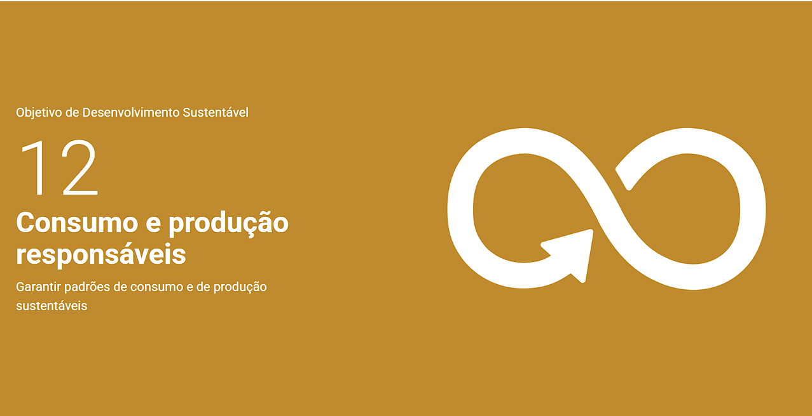

Resumo
Sou estudante de Engenharia na UTFPR. Tenho interesse em sistemas microcontrolados e busco desenvolver meus conhecimentos por meio dos estudos e de projetos acadêmicos.
ODS que pretendo contribuir

Pretendo contribuir compartilhando informações sobre reciclagem e descarte de resíduos por meio do projeto EcoBairro.
Habilidades
- Lógica de programação.
- Conhecimentos básicos em Java
- Conhecimentos básicos em sistemas microcontrolados
Educação
- ENgenharia de computação
- UTFPR
- Ingresso em 2020 — Em andamento
Hobbies
- assistir futebol
- Escutar musica